Las Sombras del Abismo
"Hace millones de años, una enorme torre apareció... Ahora, debes descubrir sus secretos o ser consumido por la oscuridad que hay en su interior."
Descubrir la historiaEn el mundo de Zhyniria existe un lugar que los antiguos llamaban la Torre de los Sueños. Nadie sabe quién la construyó ni cuándo apareció, pero su presencia ha definido la historia de civilizaciones enteras. Una estructura colosal que desafía el tiempo, la lógica y el miedo.
Durante siglos, la torre fue un faro de poder arcano. Pero con el paso de los años, algo cambió. La barrera entre los sueños y las pesadillas comenzó a debilitarse desde adentro, y la oscuridad tomó el control.
Hoy, la torre no es solo un lugar físico. Es un reflejo del alma de quienes se atreven a entrar. Cada habitación, cada puzzle, cada decisión revela algo sobre el explorador que los enfrenta.
¿Tienes lo que se necesita para descubrir sus secretos?
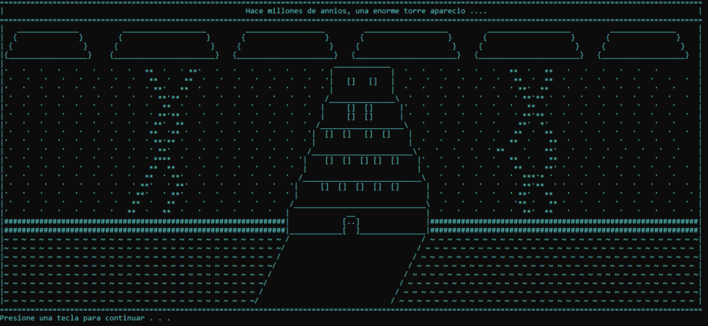
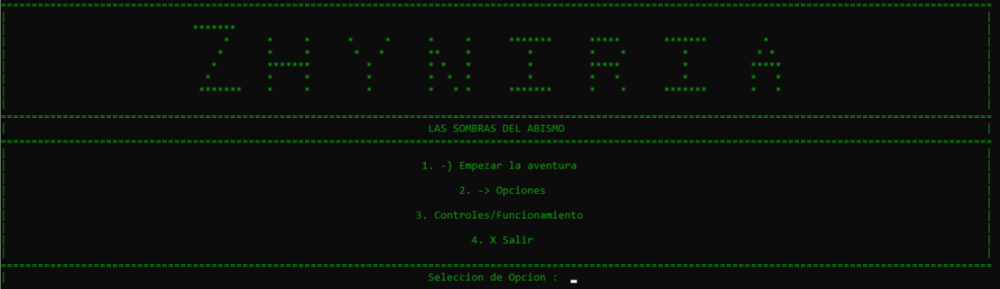
La Incertidumbre
Cruzas el umbral y la puerta se cierra detrás de ti con un golpe que resuena en toda la torre. La primera habitación parece ordinaria — un reloj, unos libros, un cofre — pero nada en Zhyniria es lo que parece.
Cada objeto esconde un fragmento del código que abre la siguiente puerta. Tendrás que observar, analizar y decidir sabiamente. Un error puede significar el fin.
"El tiempo no espera a los indecisos. Las manecillas del reloj son tu primera lección."
Tres intentos. Un código. La diferencia entre avanzar o convertirte en otra historia que la torre nunca contará.
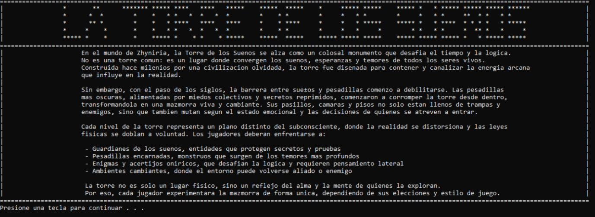
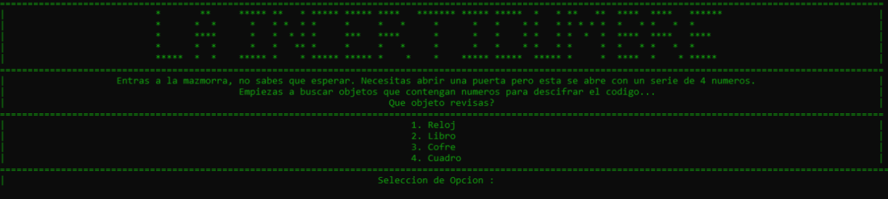
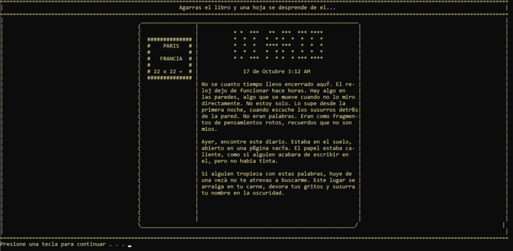
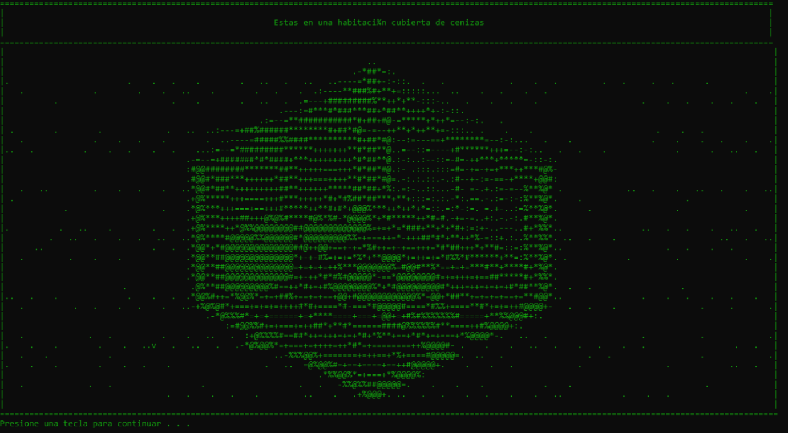
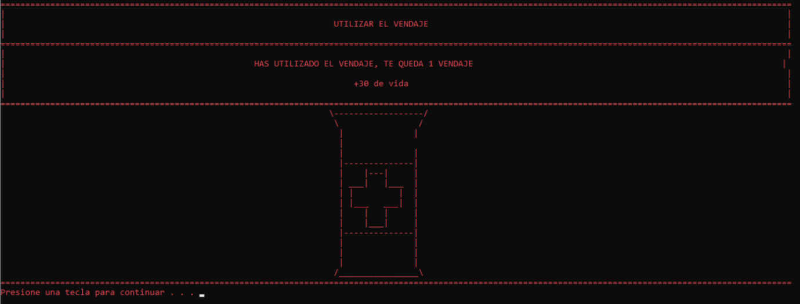
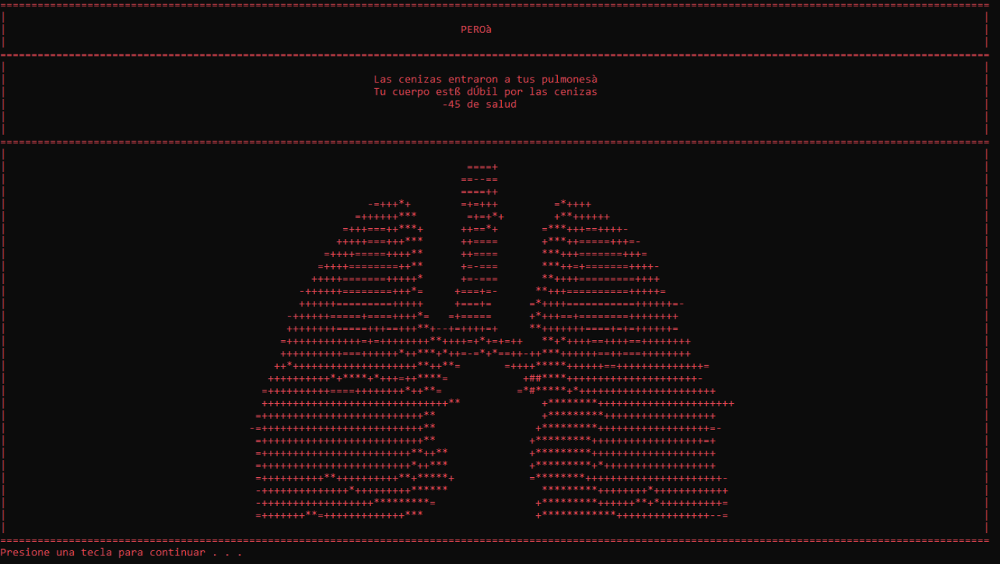
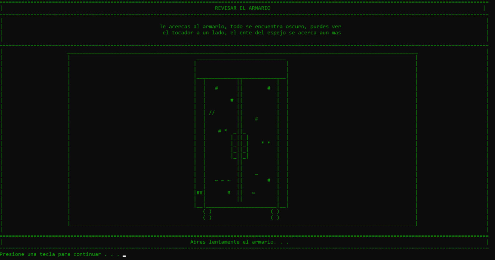
Los Fragmentos
El aire se vuelve espeso. Las cenizas caen como una lluvia silenciosa que quema los pulmones de quienes no se protegen. Esta habitación no solo pone a prueba tu ingenio — pone a prueba tu resistencia.
Tu objetivo: encontrar cinco fragmentos de espejo escondidos entre los muebles, mientras administras cuidadosamente tu salud. Cada movimiento incorrecto te debilita.
"El espejo roto refleja la verdad que los ojos sanos se niegan a ver."
Dos vendajes. Cuatro lugares para buscar. Decisiones que pueden salvarte o hundirte antes de llegar a la siguiente habitación.
La Verdad Oculta
En el centro de la habitación, un diario abierto. Sus páginas incompletas revelan la historia de alguien que estuvo aquí antes que tú — y que nunca salió. Las palabras faltantes son la llave.
Este capítulo pone a prueba tu capacidad de observación y memoria. Los patrones están ahí, ocultos en las palabras que el diario sí tiene. Solo necesitas leer entre líneas.
"Me miro al espejo y apenas reconozco al que devuelve la mirada; ¿seré yo o solo la sombra de quien quise ser?"
Tres intentos para descifrar el código. Una decisión final que definirá si la torre te libera o te consume para siempre.
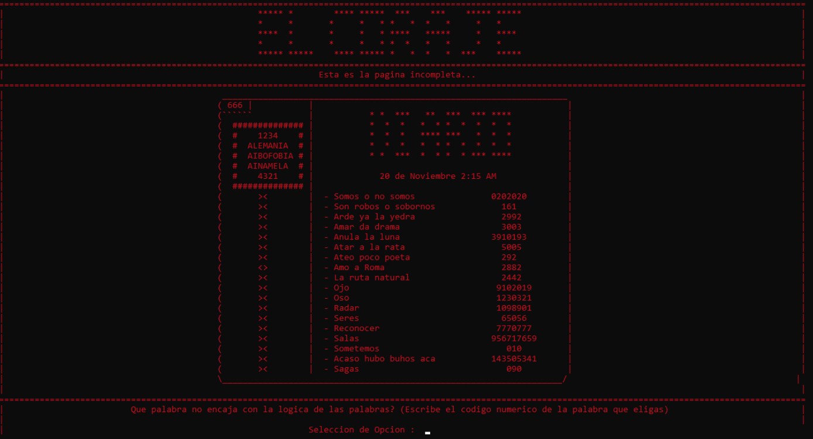
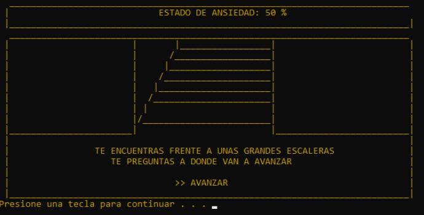
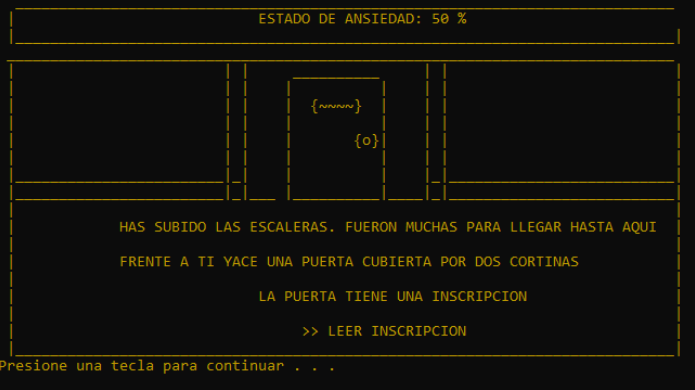
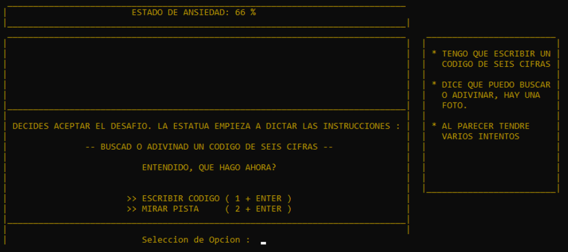
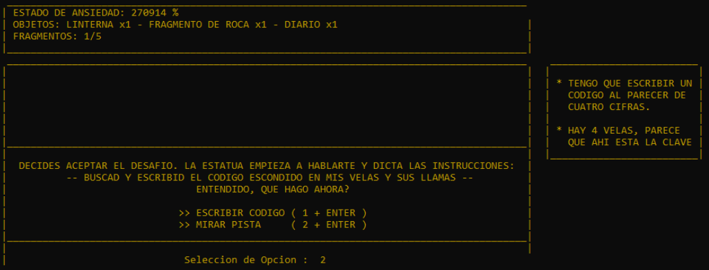
El Juicio Final
La última habitación es la más grande y la más oscura. Cinco estatuas de piedra te rodean, cada una representando a una de las hermanas que gobernaron la torre en tiempos antiguos.
Cada estatua tiene su propio acertijo, su propio precio. Fallar no solo significa retroceder — en esta habitación, las consecuencias son definitivas. La linterna que encontraste es tu única fuente de luz.
"Tu certeza es más afilada que cualquier cuchillo en esta torre; avanzas sin dudar, porque sabes que la victoria ya está atrapada entre tus manos."
Cuatro acertijos encadenados. Códigos, palabras, coordenadas y decisiones de vida o muerte. Este es el corazón de la torre — y solo los más agudos llegarán a ver lo que hay más allá.
La torre no perdona. Cada error tiene un precio. ¿Cuántos de estos destinos serás capaz de evitar?
Asfixia
Las cenizas llenan tus pulmones si no te proteges a tiempo.
Código Incorrecto
Tres intentos fallidos y la torre decide que no mereces continuar.
Trampa Mortal
Algunos objetos fueron puestos ahí para los curiosos imprudentes.
Aplastamiento
Los mecanismos de piedra no distinguen entre enemigos y exploradores.
Ansiedad Fatal
Dudar demasiado en momentos críticos tiene consecuencias permanentes.
Y más...
La torre guarda secretos que solo descubrirás al entrar.
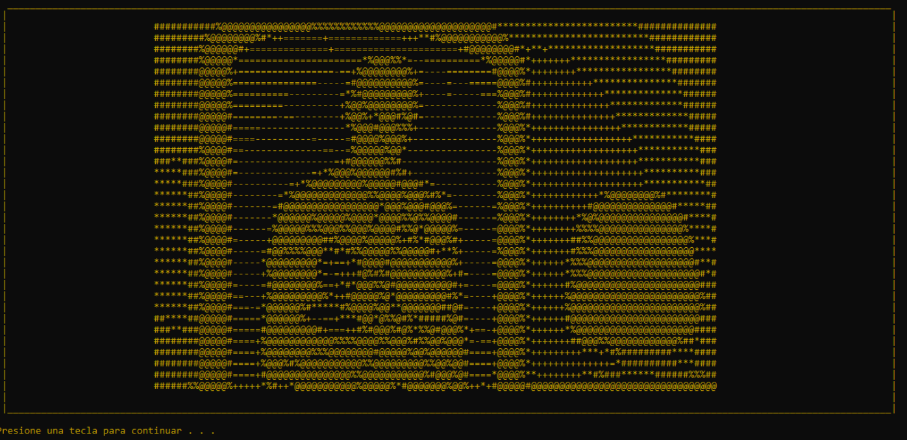
`Muy pocos llegan a ver lo que hay más allá de las cinco estatuas. La torre ha consumido a cientos de almas valientes que creyeron estar preparadas.
El final de Zhyniria no es solo una recompensa. Es una revelación sobre la naturaleza misma de los sueños, las pesadillas y el precio de la curiosidad.
"La torre te espera, valiente aventurero. La elección es tuya... si te atreves a entrar."
Descarga Zhyniria gratis y descubre si eres capaz de sobrevivir a las sombras del abismo. Solo necesitas Windows y el valor suficiente.
⚔ Descargar Zhyniria.exe